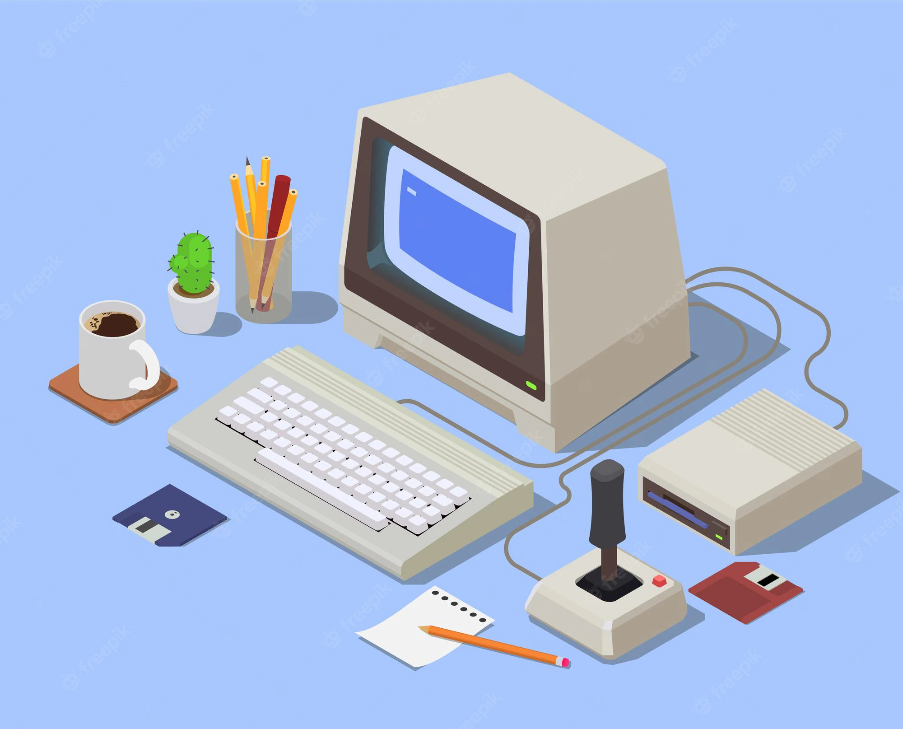

Dators (angļu: dat(a) (process)or — ‘datu apstrādātājs’) ir iekārta, kas uzkrāj un apstrādā datus pēc iepriekš definētas procedūras.
Datori ir konstruēti no komponentēm, kas veic vienkāršas, iepriekš noteiktas darbības. Šo komponenšu savstarpējā saziņa ļauj datoram veikt informācijas apstrādes procesus. Pareizi sakonfigurēts (ieprogrammēts) dators spēj risināt noteiktas problēmas, kā arī būt lielākas sistēmas sastāvdaļa. Pareizi sakonfigurētam datoram padodot ievaddatus, programma tos apstrādā, un dators spēj atrisināt problēmu vai prognozēt kādas sistēmas uzvedību u.tml.

Lai dators varētu veikt kādu darbību, tā atmiņā visu laiku ir jābūt ielādētai kādai programmai. Parasti (tipiskos datoros) šāda programma ir operētājsistēma. Operētājsistēma nosaka, kuras programmas darbināt, kad un kādus resursus (piemēram, atmiņu) tām piešķirt. Operētājsistēma arī nodrošina aparatūras abstrakcijas slāni, kas nodrošina iespēju vienā datorā veidotas programmas darbināt uz citiem datoriem.
Operētājsistēmu piemēri:
Dators līdzīgi kā "Lego" konstruktors sastāv no dažādiem blokiem jeb komponentēm: